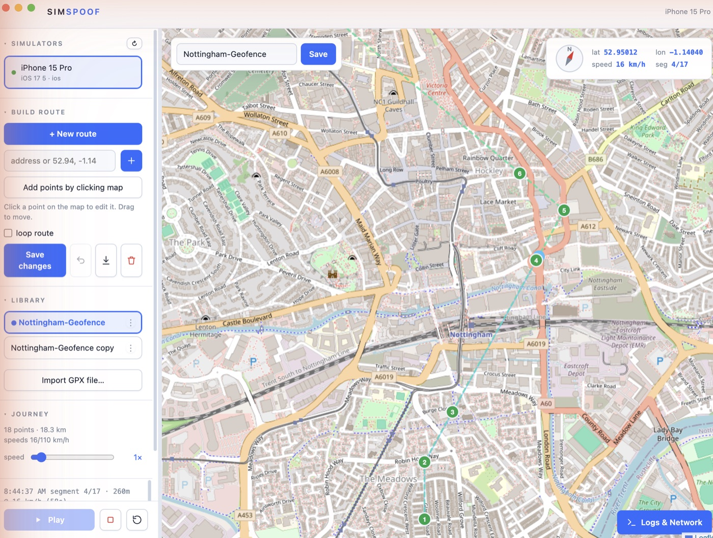
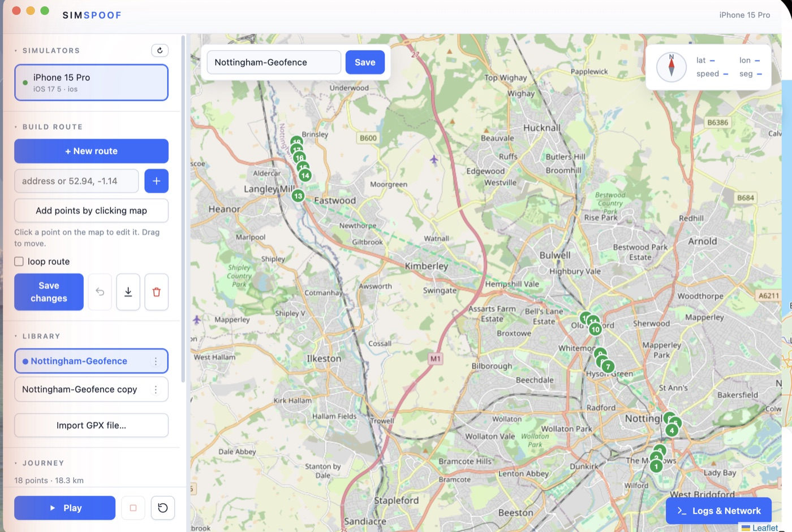
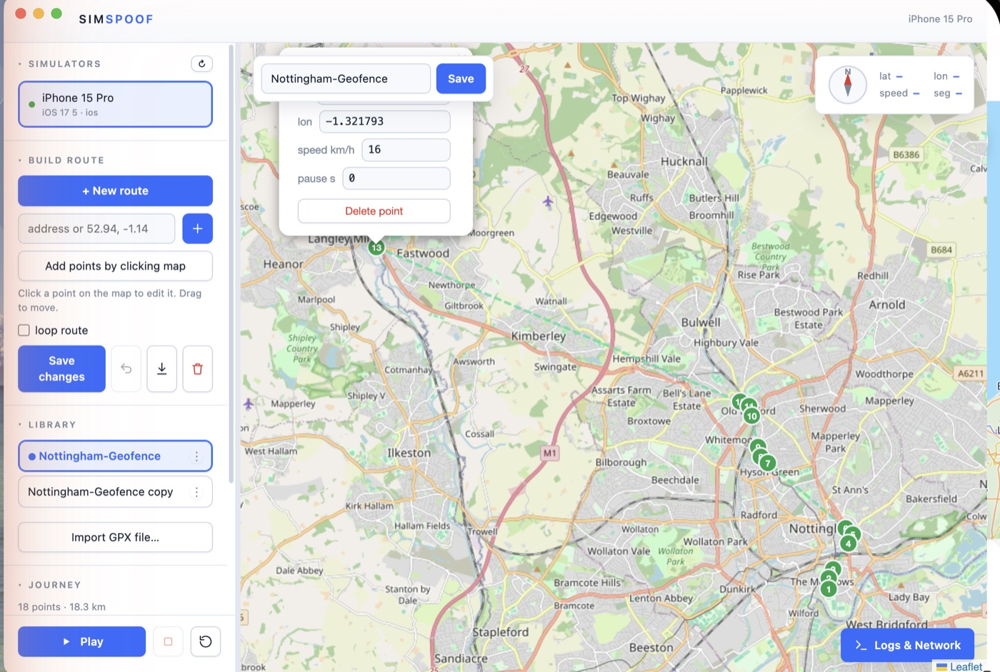

SimSpoof takes a route file and plays it as real movement on an iPhone Simulator, an Android emulator, or a real iPhone — as if the phone were actually travelling. Watch the dot move, control the speed, and see your app react. No walking the route.
Everything you need to drive a route and watch your app respond, in one window.
Drop in a .gpx route, press Play, and the phone
starts moving along it. Speed up, slow down, or loop it.
Any mix of iPhone simulators, Android emulators, and a real iPhone — one route plays on all of them together so you can compare.
Click points on the map, type coordinates, or type an address. Drag points, set per-leg speed and stop pauses, save for later.
Live log streams next to the map: the phone's system logs and your app's own debug messages, as the phone moves.
A Chrome-style Network tab shows your app's API requests and responses — headers, payloads, timing — pulled from Metro.
Live CPU and memory charts for the running app, per-process, down to individual threads — a quick glance while you drive.
SimSpoof is a Mac app (Windows too, minus the iPhone-Simulator part).
Four steps from launch to watching your app react.
Every simulator, emulator, or connected iPhone that's running appears in the sidebar and is selected by default. Untick any you don't want to drive.
Load a .gpx from your library, import one, or draw a
new route on the map — click to add points, type an address to
jump there, drag points to adjust. Set speed per leg and a pause
at any stop, then save it with a name.
SimSpoof walks the route point by point, telling each phone "you are here" many times a second and moving smoothly between points at your chosen speed. Pause points make it stop and wait, like a real stop. Adjust the speed factor or loop it live.
The dot moves on the map with a live compass and lat/lon/speed readout. Open the log & network panel to see your app receiving the new positions in real time.



The bottom panel is a full inspector. Hit Start capture and pick a tab.
-term to exclude a
term.
A lightweight glance at what the running app costs — without attaching a debugger.
Worth knowing before you trust a simulator result.
Only what matches the phones you want to drive.
| iPhone Simulator | Xcode installed. |
| Android emulator | Android platform-tools (adb). |
| Real iPhone |
Phone in Developer Mode, the
pymobiledevice3 helper, and a tunnel running to
reach it.
|
| App debug logs | The target app running as a development build. |
| Windows | Android and real-iPhone support only — the iPhone-Simulator part is Mac-only. |